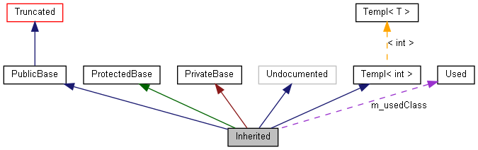

Обозначения, используемые в графах.
Рассмотрим следующий пример:
class Invisible { };
class Truncated : public Invisible { };
class Undocumented { };
class PublicBase : public Truncated { };
template<class T> class Templ {};
class ProtectedBase { };
class PrivateBase { };
class Used { };
class Inherited : public PublicBase,
protected ProtectedBase,
private PrivateBase,
public Undocumented,
public Templ<int>
{
private:
Used *m_usedClass;
};
Если MAX_DOT_GRAPH_HEIGHT в конфигурационном файле установлен в 240, получится следующий граф:
 Прямоугольники в этом графе имеют следующее значение:
-
Заполненный черный прямоугольник представляет структуру или класс, для которого создан граф.
-
Прямоугольник с черной границей обозначает документированную структуру или класс.
-
Прямоугольник с серой границей обозначает недокументированную структуру или класс.
-
Прямоугольник с красной границей обозначает документированную структуру или класс, для которого не все отношения наследования/содержания показаны. Граф усечен, если он не поместился в указанных границах.
Стрелки имеют следующее значение:
-
Темно-синяя стрелка используется для изображения отношения открытого наследования между двумя классами.
-
Темно-зеленая стрелка используется при защищенном наследовании.
-
Темно-красная стрелка используется при закрытом наследовании.
-
Фиолетовая стрелка используется, если класс содержится вдругом класе или используется другим классом.Со стрелкой указывается переменная, через которую доступен указываемый класс или структура.
-
Желтая стрелка используется для связи подстановки шаблона и шаблона, на основе которого эта подстановка выполнена. С шаблономуказывается параметр подстановки.